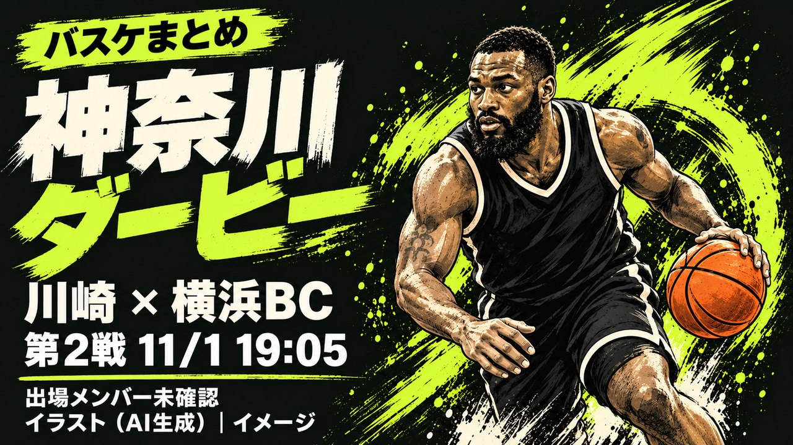

神奈川ダービー第1戦は横浜BCが75-65で勝利、第2戦は今夜19時05分から同会場

10月31日の神奈川ダービー第1戦は、横浜ビー・コルセアーズが75対65で川崎ブレイブサンダースに勝ちました。第2戦は今夜11月1日19時05分から、同じ東急ドレッセとどろきアリーナで行われます。この記事は第1戦の結果確認と、第2戦の見立てをまとめます。
【検証】第1戦は横浜BCが75-65で勝利
川崎のホームゲームとして行われた第1戦は、横浜BCが75対65で勝ちました。この試合は2026-27シーズンのB.PREMIERリーグ戦、第12節です。川崎ブレイブサンダース公式サイトの試合結果ページで確認しました。
川崎の桐谷大ヘッドコーチは、試合後に1クオーターと3クオーターの入りの悪さを振り返りました。横浜BCには3ポイントシュートを多く決められたと話しています。横浜BCのジェームズ・ベル選手は31分28秒出場し、オンコート時のスコアは67対49でした。
【検証】試合前の戦篩との比較
第1戦の前の戦篩は、川崎が4勝7敗でした。横浜BCは5勝7敗でした。この結果に第1戦を加えると、川崎は4勝8敗になります。
横浜BCは6勝7敗になります。前日の記事では、通算対戦成績として川崎の39勝9敗を紹介しました。
ここからは独自の分析です。通算では川崎が大きく勝っていますが、今季のここまでの対戦では横浜BCも互角に近い成績です。第1戦の横浜BC勝利は、この傾向と合う結果でした。
今夜(11/1)の第2戦について
第2戦は、今夜11月1日19時05分に開始します。会場は同じ東急ドレッセとどろきアリーナです。「神奈川ダービー」の2戦目として開催されます。
当日の最新のインジュアリーリストは、この記事の時点で未確認です。両チームの出場メンバーも未確認です。
【予測】第2戦の見立て
ここからは独自の予測です。第1戦に敗れた川崎は、連敗を避けるために第2戦で立て直しを図る可能性があります。
Q&A
Q. 今夜の第2戦の勝敗を予測していますか？
A. いいえ。独自の見立てとして、川崎が立て直しを図る可能性を述べただけです。出場メンバーや結果は、試合が終わるまで分かりません。
出典:
https://kawasaki-bravethunders.com/topics_detail43/id=25882(川崎ブレイブサンダース公式、10/31第1戦の結果・桐谷大ヘッドコーチの試合後コメント・ジェームズ・ベル選手の出場スタッツ、取得2026-11-01 08:09 JST)
https://bleague.jp/bmagazine/detail/id=666910(B.LEAGUE公式「B.PREMIER見どころ10/30~11/1」、第1戦前の両チーム戦篩)
https://kawasaki-bravethunders.com/lp/game_20261031_20261101/(川崎ブレイブサンダース公式、10/31・11/1横浜BC戦の開催情報)
https://www.bleague.jp/news/injury.html(B.LEAGUE公式インジュアリーリスト、対象日2026-11-01分は本記事時点で未確認)
article-daily-20261031.html(当サイト、前日の神奈川ダービー予測記事・通算対戦成績39勝9敗の出典)
※ 本日もbleague.jpの公式ヘージへ直接接続できず、試合詳細・インジュアリーリストのページは内容を開けていません。第1戦の結果・戦篩・コーチコメント・個人スタッツは、検索結果に表示された川崎ブレイブサンダース公式サイトのページタイトルとスニップットで確認しましたが、記事本文を直接は開けていません。米須玲音選手・並里成選手の個人スタッツ、11月11日時点のインジュアリーリスト、両チームの当日出場メンバーは未確認です。